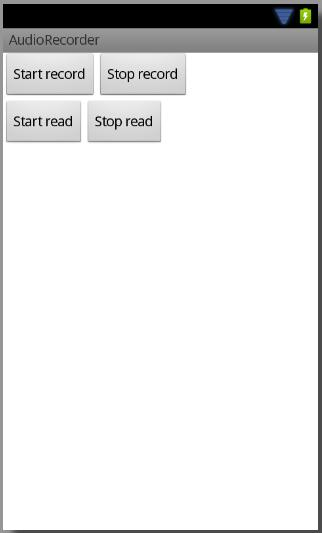

В этом уроке:
- пишем звук с помощью AudioRecorder
Рассмотренный на прошлом уроке MediaRecorder записывал звук сразу в файл. AudioRecorder не пишет данные, а позволяет нам их получать в приложении. т.е. является посредником между приложением и микрофоном. Когда мы стартуем запись, AudioRecorder начинает получать данные с микрофона и хранит их у себя во внутреннем буфере. Мы можем при создании AudioRecorder указать желаемый размер этого буфера и далее запрашивать из него данные методом read.
Т.е. AudioRecorder будет полезен, если вы хотите как-то обработать данные перед записью в файл или, если вы хотите отправлять данные не в файл, а куда-либо еще.
Напишем приложение, в котором рассмотрим основные методы работы с AudioRecorder.
Создадим проект:
Project name: P1301_AudioRecorder
Build Target: Android 4.0
Application name: AudioRecorder
Package name: ru.startandroid.develop.p1301audiorecorder
Create Activity: MainActivity
Добавим строки в strings.xml:
<string name="start_record">Start record</string>
<string name="stop_record">Stop record</string>
<string name="start_read">Start read</string>
<string name="stop_read">Stop read</string>
Нарисуем экран main.xml:
<?xml version="1.0" encoding="utf-8"?>
<LinearLayout
xmlns:android="http://schemas.android.com/apk/res/android"
xmlns:tools="http://schemas.android.com/tools"
android:layout_width="match_parent"
android:layout_height="match_parent"
android:orientation="vertical"
tools:context=".MainActivity">
<LinearLayout
android:layout_width="match_parent"
android:layout_height="wrap_content">
<Button
android:layout_width="wrap_content"
android:layout_height="wrap_content"
android:onClick="recordStart"
android:text="@string/start_record">
</Button>
<Button
android:layout_width="wrap_content"
android:layout_height="wrap_content"
android:onClick="recordStop"
android:text="@string/stop_record">
</Button>
</LinearLayout>
<LinearLayout
android:layout_width="match_parent"
android:layout_height="wrap_content">
<Button
android:layout_width="wrap_content"
android:layout_height="wrap_content"
android:onClick="readStart"
android:text="@string/start_read">
</Button>
<Button
android:layout_width="wrap_content"
android:layout_height="wrap_content"
android:onClick="readStop"
android:text="@string/stop_read">
</Button>
</LinearLayout>
</LinearLayout>Верхние кнопки стартуют/останавливают запись звука с микрофона в AudioRecorder, нижние – чтение данных из AudioRecorder в наш буфер.

В манифесте добавьте разрешение на запись звука: android.permission.RECORD_AUDIO.
MainActivity.java:
package ru.startandroid.develop.p1301audiorecorder;
import android.app.Activity;
import android.media.AudioFormat;
import android.media.AudioRecord;
import android.media.MediaRecorder;
import android.os.Bundle;
import android.util.Log;
import android.view.View;
public class MainActivity extends Activity {
final String TAG = "myLogs";
int myBufferSize = 8192;
AudioRecord audioRecord;
boolean isReading = false;
@Override
protected void onCreate(Bundle savedInstanceState) {
super.onCreate(savedInstanceState);
setContentView(R.layout.main);
createAudioRecorder();
Log.d(TAG, "init state = " + audioRecord.getState());
}
void createAudioRecorder() {
int sampleRate = 8000;
int channelConfig = AudioFormat.CHANNEL_IN_MONO;
int audioFormat = AudioFormat.ENCODING_PCM_16BIT;
int minInternalBufferSize = AudioRecord.getMinBufferSize(sampleRate,
channelConfig, audioFormat);
int internalBufferSize = minInternalBufferSize * 4;
Log.d(TAG, "minInternalBufferSize = " + minInternalBufferSize
+ ", internalBufferSize = " + internalBufferSize
+ ", myBufferSize = " + myBufferSize);
audioRecord = new AudioRecord(MediaRecorder.AudioSource.MIC,
sampleRate, channelConfig, audioFormat, internalBufferSize);
}
public void recordStart(View v) {
Log.d(TAG, "record start");
audioRecord.startRecording();
int recordingState = audioRecord.getRecordingState();
Log.d(TAG, "recordingState = " + recordingState);
}
public void recordStop(View v) {
Log.d(TAG, "record stop");
audioRecord.stop();
}
public void readStart(View v) {
Log.d(TAG, "read start");
isReading = true;
new Thread(new Runnable() {
@Override
public void run() {
if (audioRecord == null)
return;
byte[] myBuffer = new byte[myBufferSize];
int readCount = 0;
int totalCount = 0;
while (isReading) {
readCount = audioRecord.read(myBuffer, 0, myBufferSize);
totalCount += readCount;
Log.d(TAG, "readCount = " + readCount + ", totalCount = "
+ totalCount);
}
}
}).start();
}
public void readStop(View v) {
Log.d(TAG, "read stop");
isReading = false;
}
@Override
protected void onDestroy() {
super.onDestroy();
isReading = false;
if (audioRecord != null) {
audioRecord.release();
}
}
}Смотрим код.
В onCreate мы вызываем свой метод создания AudioRecorder и выводим в лог состояние созданного объекта. Состояние можно получить методом getState. Может быть всего два состояния: STATE_INITIALIZED и STATE_UNINITIALIZED. Означают они соответственно то, что AudioRecorder к работе готов или не готов.
В createAudioRecorder создаем AudioRecorder. Для этого нам понадобится несколько входных параметров:
- источник звука
- сэмплрейт
- режим каналов моно/стерео
- формат аудио
- размер буфера
Сэмплрейт мы ставим 8000. Режим - моно. Формат аудио – 16 бит. Чтобы узнать размер буфера, есть метод getMinBufferSize. Он, исходя из переданных ему на вход данных о формате аудио, возвращает минимально-возможный размер буфера, с которым сможет работать AudioRecorder. Мы получаем минимальный размер и в переменную internalBufferSize помещаем этот размер, умноженный на 4. Такой размер буфера будет в созданном AudioRecord.
Далее создаем AudioRecord. В качестве источника звука указываем микрофон. Также указываем сэмплрейт, режим каналов, формат и размер буфера.
В методе recordStart стартуем запись методом startRecording. С помощью метода getRecordingState получаем статус - идет запись или нет. Вариантов тут два: RECORDSTATE_RECORDING (запись идет) и RECORDSTATE_STOPPED (запись остановлена).
В recordStop останавливаем запись методом stop.
В readStart ставим метку isReading в true. Она будет означать, что мы сейчас находимся в режиме чтения данных из AudioRecorder. Далее создаем новый поток и чтение выполняем в нем, чтобы не занимать основной поток. Мы создаем свой буфер размером myBufferSize и читаем в него данные методом read. Это происходит в цикле, который проверяет, что мы в режиме чтения. Метод read на вход принимает массив (в который будут помещены данные), отступ (если вам надо прочесть данные не сначала, а с какой-то позиции), и размер порции получаемых данных. В readCount метод read возвращает число байт, которые он нам отдал. В totalCount мы суммируем общее количество полученных байтов.
У метода read кстати есть еще несколько реализаций, если эта вам не подходит. Подробнее смотрите в документацие.
В методе readStop мы выключаем режим чтения, присваивая переменной isReading значение false. Поток из readStart прочтет это значение, выйдет из цикла и завершит свою работу.
В onDestroy выключаем режим чтения и методом release освобождаем ресурсы, занятые AudioRecord.
Все сохраняем, запускаем приложение.
В логах мы видим
minInternalBufferSize = 1024, internalBufferSize = 4096, myBufferSize = 8192
init state = 1
Мы видим, что минимальный размер буфера AudioRecorder насчитал равным 1024. Внутренний буфер будет 4096. Размер нашего буфера будет 8192. Состояние рекордера = 1, это значение переменной STATE_INITIALIZED, значит все ок, к работе готов.
Жмем Start record.
record start
recordingState = 3
Состояние записи рекордера = 3, это значение переменной RECORDSTATE_RECORDING, значит все ок, запись идет.
AudioRecorder сейчас получает данные с микрофона и держит их в своем буфере. Попробуем прочесть эти данные. Жмем Start read, и через несколько секунд Stop read
Логи:
14:03:48.519: D/myLogs(14361): read start
14:03:48.519: D/myLogs(14361): readCount = 4096, totalCount = 4096
14:03:48.779: D/myLogs(14361): readCount = 4096, totalCount = 8192
14:03:49.039: D/myLogs(14361): readCount = 4096, totalCount = 12288
14:03:49.289: D/myLogs(14361): readCount = 4096, totalCount = 16384
14:03:49.549: D/myLogs(14361): readCount = 4096, totalCount = 20480
14:03:49.809: D/myLogs(14361): readCount = 4096, totalCount = 24576
14:03:50.069: D/myLogs(14361): readCount = 4096, totalCount = 28672
14:03:50.319: D/myLogs(14361): readCount = 4096, totalCount = 32768
14:03:50.569: D/myLogs(14361): readCount = 4096, totalCount = 36864
14:03:50.829: D/myLogs(14361): readCount = 4096, totalCount = 40960
14:03:51.079: D/myLogs(14361): readCount = 4096, totalCount = 45056
14:03:51.179: D/myLogs(14361): read stop
14:03:51.339: D/myLogs(14361): readCount = 4096, totalCount = 49152
Видим, что прошло несколько чтений буфера. Таким образом, мы получали данные с микрофона с помощью AudioRecorder.
Сколько байт занимает секунда звука
Разберемся, как подсчитать сколько места занимает звук, когда его пишешь. Вспоминаем наши параметры, которые мы задавали при создании AudioRecorder: сэмплрейт (как часто считывается звук) = 8000 Hz, формат (сколько места занимает одна запись) = 16 бит, канал = моно. Эти параметры означают, что одна секунда звука будет занимать 8000 * 16 * 1 = 128 000 бит = 16 000 байт.
Теперь посмотрим на логи. Первое чтение звука было в 14:03:48.519, а последнее в 14:03:51.339. Т.е. мы писали звук примерно три секунды. Три секунды – это 16 000 * 3 = 48 000 байт.
Снова смотрим логи, последнее значение totalCount = 49 152. Как видите, расчетная и реальная цифры похожи.
Давайте поменяем параметры в методе createAudioRecorder:
int sampleRate = 22050;
int channelConfig = AudioFormat.CHANNEL_IN_STEREO;и снова посчитаем:
22 050 (сэмплрейт) * 16 (формат) * 2 (стерео) = 705 600 бит = 88 200 байт занимает теперь секунда звука. Как видите, при улучшении качества увеличились размеры.
Все сохраним, запускаем приложение. Жмем Start record, затем Start read и секунды через три Stop read.
14:15:29.959: D/myLogs(14567): read start
14:15:29.969: D/myLogs(14567): readCount = 8192, totalCount = 8192
14:15:29.969: D/myLogs(14567): readCount = 8192, totalCount = 16384
14:15:30.069: D/myLogs(14567): readCount = 8192, totalCount = 24576
…
14:15:32.479: D/myLogs(14567): readCount = 8192, totalCount = 237568
14:15:32.579: D/myLogs(14567): readCount = 8192, totalCount = 245760
14:15:32.659: D/myLogs(14567): read stop
14:15:32.669: D/myLogs(14567): readCount = 8192, totalCount = 253952
Видим, что примерно за 3 секунды мы считали 253 952 байта. Смотрим наши подсчеты 88 200 * 3 = 264 600. Цифры снова близки.
Это было небольшое отступление от темы урока, чтобы вы имели представление о взаимосвязи таких параметров как время, сэмплрейт, формат, каналы, байты.
Слушатель отданных фреймов
Когда AudioRecorder отдает нам данные, он ведет подсчет отданных фреймов. Фрейм – это единица записи звука. Сколько байт занимает один фрейм? Это мы уже считали чуть раньше – формат * режим каналов. Т.е. если мы пишем звук в формате 16 бит/моно, то фрейм займет 16 * 1 = 16 бит = 2 байта.
Мы можем на AudioRecorder повесить слушателя с парой методов. Один метод будет срабатывать периодически через каждое указанное кол-во отданных фреймов, а другой разово по достижению определенного кол-ва отданных фреймов.
Перепишем createAudioRecorder:
void createAudioRecorder() {
int sampleRate = 8000;
int channelConfig = AudioFormat.CHANNEL_IN_MONO;
int audioFormat = AudioFormat.ENCODING_PCM_16BIT;
int minInternalBufferSize = AudioRecord.getMinBufferSize(sampleRate,
channelConfig, audioFormat);
int internalBufferSize = minInternalBufferSize * 4;
Log.d(TAG, "minInternalBufferSize = " + minInternalBufferSize
+ ", internalBufferSize = " + internalBufferSize
+ ", myBufferSize = " + myBufferSize);
audioRecord = new AudioRecord(MediaRecorder.AudioSource.MIC,
sampleRate, channelConfig, audioFormat, internalBufferSize);
audioRecord.setPositionNotificationPeriod(1000);
audioRecord.setNotificationMarkerPosition(10000);
audioRecord
.setRecordPositionUpdateListener(new OnRecordPositionUpdateListener() {
public void onPeriodicNotification(AudioRecord recorder) {
Log.d(TAG, "onPeriodicNotification");
}
public void onMarkerReached(AudioRecord recorder) {
Log.d(TAG, "onMarkerReached");
isReading = false;
}
});
}Метод setRecordPositionUpdateListener устанавливает слушателя с методами onPeriodicNotification и onMarkerReached, которые я описал выше. Метод setPositionNotificationPeriod устанавливает кол-во фреймов для срабатывания onPeriodicNotification, а setNotificationMarkerPosition – для срабатывания onMarkerReached.
Т.е. метод onPeriodicNotification будет срабатывать каждые 1000 отданных фреймов. А onMarkerReached – по достижению 10000 отданных фреймов. В onMarkerReached мы остановим чтение.
Все сохраним, запустим приложение и жмем Start record, затем Start read. В этот раз мы можем вручную не останавливать процесс чтения, т.к. он остановится сам по достижении 10000 фреймов.
Смотрим логи:
read start
readCount = 4096, totalCount = 4096
onPeriodicNotification
onPeriodicNotification
onPeriodicNotification
readCount = 4096, totalCount = 8192
onPeriodicNotification
onPeriodicNotification
onPeriodicNotification
readCount = 4096, totalCount = 12288
onPeriodicNotification
onPeriodicNotification
readCount = 4096, totalCount = 16384
onPeriodicNotification
onMarkerReached
onPeriodicNotification
readCount = 4096, totalCount = 20480
Видим, что onPeriodicNotification срабатывал примерно каждые 2000 байт, а onMarkerReached сработал около получения 20000 байт.
Вспоминаем, что один фрейм при текущих настройках занимает два байта. А значит, как мы и указали, метод onPeriodicNotification срабатывал каждые 1000 фреймов, а onMarkerReached – как только было получено 10000 фреймов